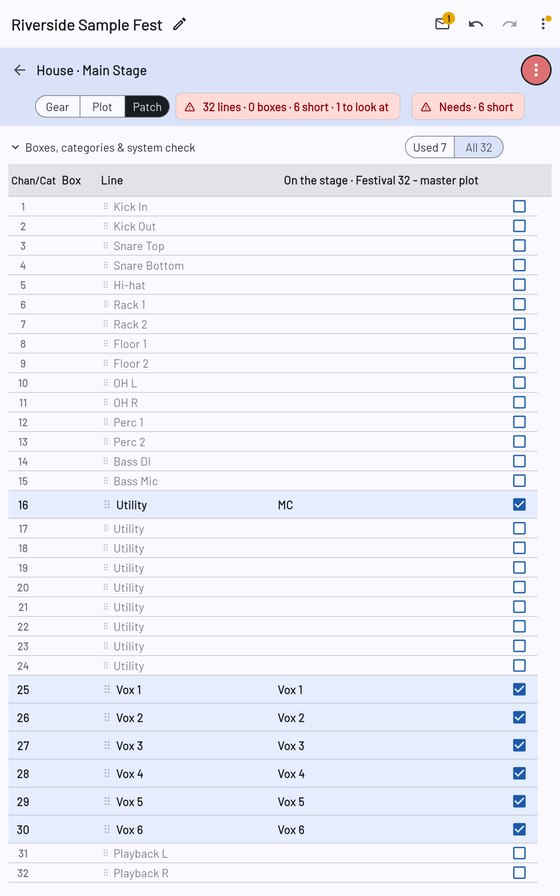

Master patch
The house's channel list: every line and where it's plugged in. Every act lands on these lines. It is kept in the House window, with the house's Gear list and its master plot.

The House window
On the Show page, the House row under the stage chips has three small windows: Gear, Plot and Patch. Each opens the House window: the house's Gear list, its master plot (the stage editor) or its master patch, each filling the page.
The bar at the top has a back arrow, House · Main Stage and Gear | Plot | Patch to hop between the three; the arrow, or Android's Back, returns to the show. On Patch the bar also has the summary chip ("48 lines · 2 boxes · 2 short"), Needs (what's short) and the patch's ⋮ menu.
It is the house alone: lay out the stage and the patch's lines here. A band on the house is opened from that band's own row (see A band on the house below).
Starting it
With no house yet the House row reads House · none yet, with only Gear beside Set up the house, which opens the House window on Patch. (A phone has no House row, no Plot and no Patch.) An empty stage shows Start the master patch: New — pick the main snake (New — how many lines if the Gear list has no main snake) or Start from a ready plan. The same window is ⋮ → New / Load / Clear…: New, Clear this patch, your saved patches, .stagepatch files from Download/PatchWork Live, and the ready plans (Bluegrass 32, Showcase 48, Festival 48, Festival 32 — patches under 32 lines are not offered).
The patch's ⋮ on the bar: Night grid, New / Load / Clear…, Fit the patch to the bands…, Save master patch, Save house as a template…, Export (.stagepatch and .csv), Category order…, Out of lines…, Band landing… and What are these lines?. Fit and Band landing show only when a house patch exists.
Lines and acts
In the House window the grid shows the house's own lines. Tap a line for its window: Takes, Line name, Category, Locked (no act lands on it), Bad (acts skip it) and Remove; hold its name to Trace who is on it tonight and where it goes. A band on these lines is seen from the band's own row (next). In a band's box (tap its name on the Show page) Numbering is # Fest (its inputs take the house patch's line numbers) or 1 to 1 (its own numbers).
A band on the house
Each band's row on the Show page has two small windows, Plot and List. With the House switch off (As sent) they show what the band sent: their plot, and their input list as read. With the switch on (On the house) the page is amber, the windows read On the house and My lines, and the band's window shows the band on the house's stage, or the whole house patch with the band's inputs on their lines.
In that window, on the line under the bar, are Lock in (then Locked in 4:12 pm; a hold shows the plan as it was before the first Lock in) and Setup: Inputs, Outputs, Monitors (Wedges, House IEMs, Their IEMs, Their rack, our mixes), then the band's own rows: Send / print this plot, Role Favorites…, Read their plot with your AI, Clear and Rolling risers…. Lock in keeps the stage the crew works from; hand edits after it still reach the changeover, the house's changes don't.
On the band's list a tap on a row highlights that line's piece on the stage; the box at the row's end turns the line on or off for this band. A hold opens the line's window: Move to line, Show on stage, Trace, Off for this band, Back to the house's line and Change the house line, for every band…. A band added as No plot yet – empty stage is never on the house, and one added as No plot yet – on the house always is, whatever the switch says.
Categories
Hold a channel number — or hold and drag up / down for a block — and pick a category (Drums, Bass, Vocals, RF, Playback… or New…). Its lines are offered names (Kick, Snare…, Bass 1…). Receives says what its Utility lines take. Tap a category's chip to rename, recolour or remove it; holding it opens Category order… sets the order Push to patch uses.
Stage boxes
On the House window's Patch, tap the line count above the patch, then + Subsnake: a name, inputs × returns and a colour. Drag a box's picture onto a channel (a preview shows where it lands); over another box's channels choose Overwrite, Fill or Push. A box can sit on a multipin mult (W1) whose tails go to any channels. With a band on the patch, each line shows the box input that band plugs into — orange when it's far, red when no box has room.
Needs, fitting and landing
Needs (or Needs · 2 short) opens the list of what the acts need of each category, with spares; Push to patch there builds the lines from it (a copy of the old lines is kept; Undo).
⋮ → Fit the patch to the bands… sizes each category from the bands' reads: Size each category for 3 in 4 bands, 9 in 10 bands or Every band; lock a category by hand, see which bands do not fit, then Use this plan (or Not now). Undo takes it back.
⋮ → Out of lines…: Keep order or Add at end when a band has more mics than lines. ⋮ → Band landing…: Wired vocals, Kit lines (Only what they list / The whole kit) and Extra drums (Under Needs / On Util if open); a change lands every band on the house again. ⋮ → Night grid puts every act's channels side by side. ⋮ → Save house as a template… keeps the house's stage and patch together; it is then offered under Your templates when you start a master plot.
The master plot
Plot in the House window (the House row's Plot window, or Gear | Plot | Patch on its bar): the house stage with its boxes, monitor spots, risers and house backline, in the stage editor.
The House switch on the House row is one switch for the whole Show page. As sent: every band's windows show what it sent. On the house: the page turns amber and every band is shown on the house — it stands on the house's gear and lands on the patch's lines.